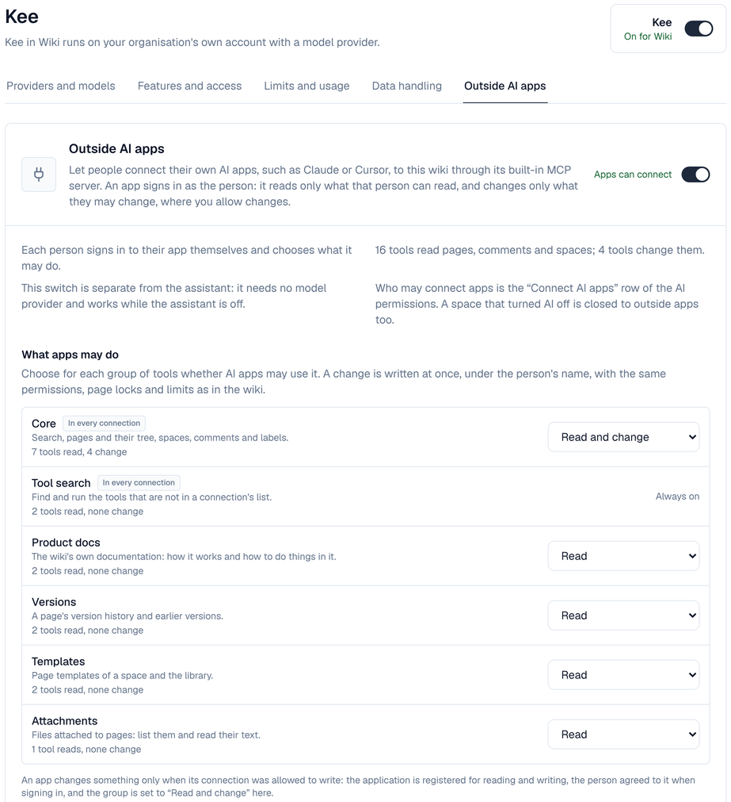
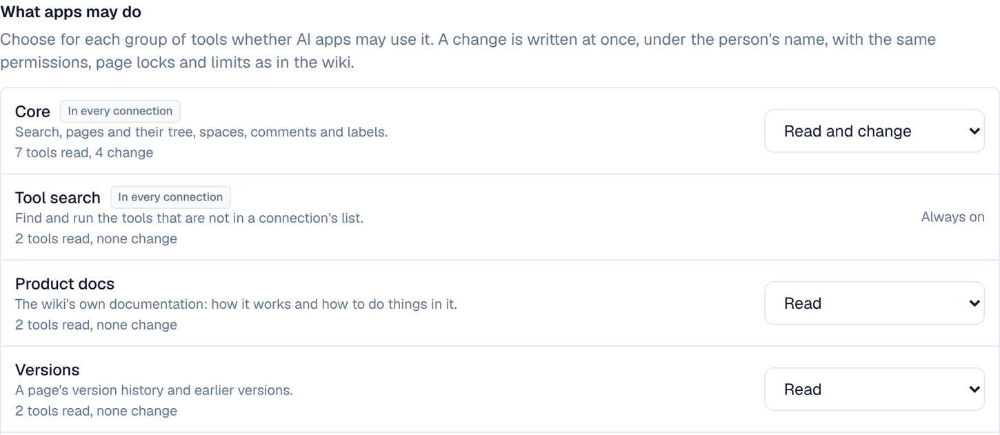
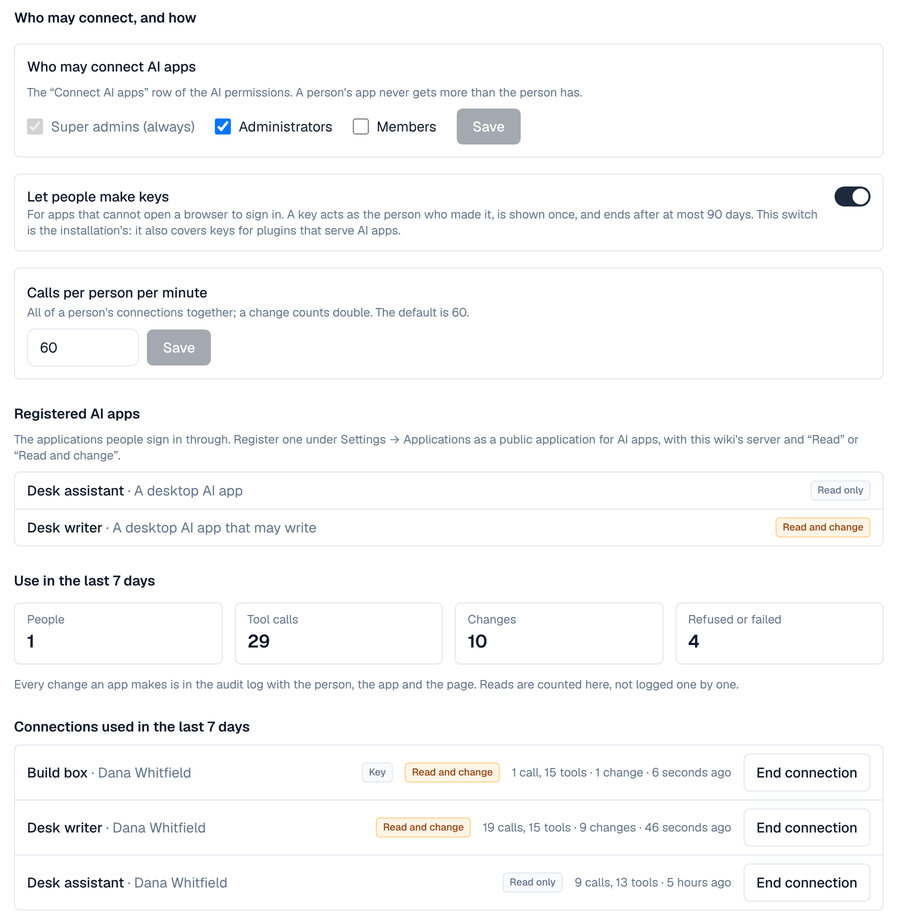

People can connect their own AI apps (Claude, Cursor, VS Code and others) to a server built into the Wiki. An app signs in as the person: it reads only what that person can read, and changes only what they may change, where you allow changes. It uses the same tool list as Ask Kee. For what people see, see Connect AI apps.
1. What it needs
| What | Details |
|---|---|
| Licence | Pro or higher |
| Its own switch | Let outside AI apps connect, off by default. It is separate from Kee: it needs no model provider and works while Kee is off |
| The public address | Set under Settings → General. The server's address is that address followed by /mcp/wiki |
| A registered AI app | Each AI app people use is registered under Settings → Access management → Applications; there is no self-registration |
| The permission | Connect AI apps, a row of the Kee permissions grid. Organization admins by default |
2. Where it is
Settings → Kee → Outside AI apps (ai:manage). While Kee is off, the same settings show as a card under the Kee page.

- Open Settings → Kee and the Outside AI apps tab (with Kee off: the card under the page).
- Turn on Let outside AI apps connect.
- Under What apps may do, set each group of tools to Off, Read or Read and change.
- Under Who may connect, and how, tick the roles that may connect apps, and save.
- Register each AI app under Settings → Access management → Applications (see Register an AI app). Its client ID then shows to people on Connect AI apps.
Turning the switch off asks first. Every connected app stops at once, on every server; connections and their settings are kept and work again when it is turned back on. A space whose admins turned Kee off is closed to outside apps too.
3. What apps may do
Each group of tools has a mode. A change is written at once, under the person's name, with the same permissions, page locks and limits as in the Wiki.
| Group | Tools | Modes |
|---|---|---|
| Core (in every connection) | Search, pages and their tree, spaces, comments and labels: 7 that read, 4 that change | Read (default) or Read and change; it can't be off |
| Tool search (in every connection) | Find and run the tools that aren't in a connection's list | Always on |
| Product docs (in every connection) | The Wiki's own documentation, built into your version | Off or Read |
| Versions | A page's version history and earlier versions | Off or Read (default) |
| Templates | Page templates of a space and the library | Off or Read (default) |
| Attachments | Files attached to pages: list them and read their text | Off or Read (default) |

- Off hides a group from the tool list, from tool search and from calls. People can't choose it for a connection.
- Only the Core group has tools that change today: create page drafts, change pages, comment, add and remove labels. No tool deletes anything or touches settings, permissions, people, keys or sign-in.
- An app changes something only when all three allow it: the application is registered for reading and changing, the person agreed to it when signing in, and the group is set to Read and change here. A key changes only when the person made it for reading and changing.
- A change applies to every connection from its next call.
4. Who may connect, and how

| Setting | Default | Meaning |
|---|---|---|
| Who may connect AI apps | Administrators | The roles of the Connect AI apps permission. Super admins always may. Groups are added in the Kee permissions grid on Features and access. A person's app never gets more than the person has |
| Let people make keys | Off | For apps that can't open a browser to sign in. A key acts as the person who made it, is shown once and ends after at most 90 days. The switch is the installation's: it also covers keys for plugins that serve AI apps, and shows only to people who manage applications. Turning it off stops existing keys |
| Calls per person per minute | 60 | All of a person's connections together; a change counts as two. 1 to 6000. Over it, the app is told how long to wait |
5. Register an AI app
Each AI app people sign in through is an application under Settings → Access management → Applications: a public application of the kind AI agent, with the app's redirect addresses, and this Wiki's server (wiki) among the servers it may use. Choose Read only, or Read and change for apps that may write. See AI agents.
- Registered AI apps on the tab lists them, marked Read only or Read and change.
- People find each app's client ID on their Connect AI apps page.
- The person signing in sees what the app asks for; changing the Wiki is listed apart, under a warning.
6. Usage and connections
- Use in the last 7 days: people, tool calls, changes, and calls refused or failed.
- Connections used in the last 7 days (at most 50): the app, the person, key or sign-in, read only or read and change, calls, tools and changes.
- End connection asks first, then blocks that connection on every server: the app can no longer read or change the Wiki as that person. Their other connections are not affected. There is no undo: the person removes the connection and signs in again to reconnect.
7. Audit and events
- Every change is in the audit log with the person, the app and the page: the page's own entry carries via and via_app, and the server adds wiki_outside_apps:change (tool, app, page, version; never content).
- Reads are counted in the usage numbers, not logged one by one.
- Settings changes raise wiki.outside_apps.update (audit wiki_outside_apps:update_settings); ending a connection raises wiki.outside_apps.connection.revoke (audit wiki_outside_apps:revoke_connection). A person's choice of groups for a connection is audited as wiki_outside_apps:update_connection.
- A change raises the page's own events (page.create, page.publish, page.comment.create and the rest) with via: mcp. See Events.
8. Cluster and Redis
Settings, connections and ended connections are in the database and apply on every server with the next request. The call limit and the write budgets are shared through Redis; without Redis each server counts on its own.
9. Scheduled job
| Job | When | What it does |
|---|---|---|
| wiki-outside-apps-cleanup | Daily at 03:41 | Deletes usage counts and unused connections older than 13 months, and retry keys older than a day |
10. Limits
- Ending a connection doesn't remove the person's sign-in or key: it blocks the connection in the Wiki until they remove it.
- Usage and the connections list cover the whole installation, not one organization.
- An app that retries a new page or comment with the same retry key gets the first answer; if the first call never finished, the app is told the outcome isn't known and nothing is written.